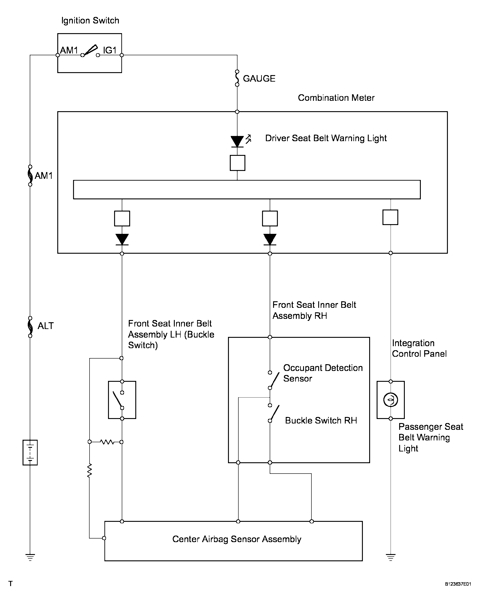

Home
>>
Scion
>>
2006
>>
xB Standard
>>
Repair and Diagnosis (Single Page)
>>
Restraints
>>
Seat Belts
>>
Seat Belt
>>
Seat Belt Warning System
>>
System Diagram (2005/07-2005/12)
System Diagram (2005/07-2005/12)
Fig 1: Seat Belt Warning System Diagram (2005/07-2005/12)

Courtesy of © TOYOTA, LICENSE AGREEMENT TMS1002